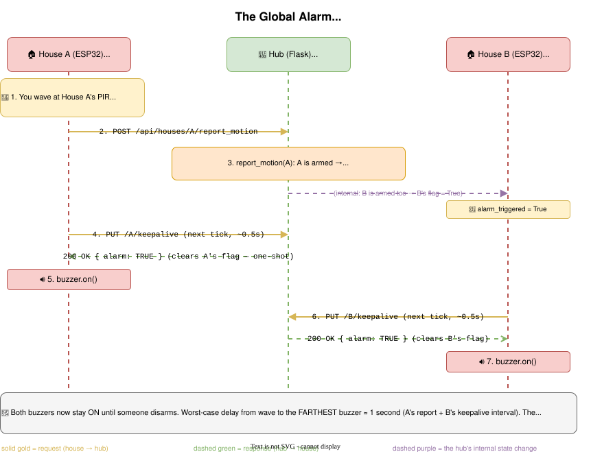

Day 4 — Sensors and the Global Alarm
Goal: Understand how the PIR motion sensor works, trace exactly how the global alarm fires across all houses, and add your own twist.
🔬 Runnable example: examples/day4_sensors/motion_test.py reads the PIR on its own (no WiFi, no hub) — the quickest way to see the sensor fire and learn its quirks before wiring it into the alarm.
🎵 Just for fun: the same buzzer that sounds the alarm can also play music. examples/bonus_music/play_melody.py teaches a bit of music theory (notes are just frequencies!) and plays a tune — a nice "make it yours" break, and a great Day-5 final-project seed.
🏠 Step 0 — Assemble the house
Before wiring the sensors, build the physical house model (walls, roof, and the board mount) and connect the parts to the ESP32. Follow the illustrated build guide:
Part 1 — How the PIR sensor works (15 min)
A PIR (Passive Infrared) sensor sees the heat that bodies give off. When something warm moves through its view, the output pin goes from 0 to 1 for about a second.
🛠 Try this at the Thonny REPL (your firmware is running in the background — that's fine, just open the shell):
>>> from machine import Pin
>>> pir = Pin(13, Pin.IN)
>>> pir.value()
0
>>> # wave a hand in front of the sensor
>>> pir.value()
1
💡 Why Pin.IN with no pull-up? The PIR has its own driver chip that pushes the line either low or high — it doesn't need our help.
Why interrupts again?
We could poll pir.value() in the main loop. But the loop also has to send keepalives, read buttons, write to the LCD… If motion happens during a 200 ms keepalive HTTP call, we'd miss it. Interrupts catch it regardless.
🛠 Try this: read implementation/smart_house/devices/motion.py. Find the IRQ trigger.
self._pin.irq(trigger=Pin.IRQ_RISING, handler=self._on_irq)
IRQ_RISING because the PIR pulls the line FROM 0 TO 1 when it sees you. The handler just sets self._triggered = True. The main loop calls was_triggered() which returns and clears the flag.
This return-and-clear pattern (also called "edge-consume") is exactly what was_pressed() does for buttons. Same idea, same implementation.
✅ Milestone 4.1: Wave at the sensor — pir.value() returns 1.
Part 2 — Trace the alarm flow on paper (20 min)
Before code, let's draw the flow. Imagine TWO houses (A and B), both armed. You wave at house A's sensor.
🛠 Try this: write down on paper or whiteboard, in order, what happens. Don't peek.
▶ Solution
- PIR pin on house A goes LOW→HIGH.
- Hardware fires the IRQ.
motion._triggered = True. - House A's main loop tick: sees
motion.was_triggered()returns True. - House A calls
hub.report_motion()→POST /api/houses/A/report_motion. - Hub's
houses.report_motion("A"): - House A is armed → setalarm_triggered = Trueon EVERY armed house (A and B). - ~0.5 sec later, house A's keepalive:
PUT /api/houses/A/keepalive. Hub returns{"alarm": true, "state_update": false}and clears A'salarm_triggered(one-shot). - House A:
if resp.get("alarm"): buzzer.on(). - ~0.5 sec later, house B's keepalive. Hub returns
{"alarm": true, ...}and clears B's flag. - House B:
buzzer.on(). - Both buzzers are now on until disarmed.
So the worst-case delay between motion and the farthest buzzer is (A's report) + (B's keepalive interval) ≈ 1.0 second. Not bad.

💡 Why one-shot? If alarm_triggered stayed true forever, the buzzer would re-fire on every keepalive even after the user pressed disarm. Clearing on read means "you got the message".
Part 3 — Test it for real (20 min)
Two teams pair up. You need TWO houses both armed.
🛠 Try this:
- In the dashboard, find both houses. Click Disarmed (arm) on each. Both should turn yellow with Armed.
- Wave a hand in front of the PIR sensor of either house.
- Within ~1 second, both buzzers start beeping. Both rows turn red with TRIGGERED.
- Click TRIGGERED (disarm) on either row. That house's buzzer stops AND its row goes back to neutral.
- The other house still buzzes — disarm it too.
✅ Milestone 4.2: Motion on one house fires the buzzer on another.
🛠 Try this: with both houses Disarmed, wave at one PIR. Nothing should happen — the alarm doesn't fire because no one is armed.
🛠 Try this: arm only ONE house. Wave at the disarmed house's PIR. What happens?
▶ Answer
Nothing fires. Look at houses.report_motion: the reporter has to be armed for propagation to start. If the disarmed house sees motion, it just records state.motion.detected = True and stops. (The "Motion!" badge briefly flashes in the dashboard, which is a nice tell.)
This is intentional: it lets a counsellor unplug a malfunctioning sensor without killing the alarm system.
Part 4 — Read houses.report_motion (10 min)
🛠 Try this: Open implementation/iot_hub/houses.py and find report_motion. It's 11 lines.
def report_motion(unique_id: str) -> bool:
with _LOCK:
reporter = HOUSES.get(unique_id)
if reporter is None:
return False
reporter["state"]["motion"]["detected"] = True
if not reporter["alarm_armed"]:
return True
for house in HOUSES.values():
if house["alarm_armed"]:
house["alarm_triggered"] = True
return True
Questions:
- Why
with _LOCK:? - Why does the reporter house also get
alarm_triggeredset? - What if a house is
Lost— would it get the alarm flag?
▶ Answers
- The Flask dev server is multi-threaded. Two requests could call
report_motionat the same time. The lock makes the dict update atomic — no half-applied changes. (Try removing the lock and pounding the endpoint with 100 parallel requests; you'll see weird state.) - The for loop walks EVERY armed house. The reporter is in
HOUSES.values(), so it gets caught too — its own buzzer fires. - Yes, if it's still marked
alarm_armed. But look atmark_lost_if_stale(): it setsalarm_armed = Falsewhen a house goes Lost. So in practice, Lost houses are never in the armed set.
Part 5 — Write a feature: "panic mode" (30 min)
Right now, the dashboard has arm per house. Let's add arm all — single click arms every house at once, like setting an alarm system before everyone leaves.
Step 1 — data layer
Add to houses.py:
def arm_all() -> int:
"""Arm every active house. Returns how many were armed."""
count = 0
with _LOCK:
for house in HOUSES.values():
# TODO: only arm if status is "Active"
# TODO: set alarm_armed = True
# TODO: increment count
pass
return count
▶ Solution
def arm_all() -> int:
"""Arm every active house. Returns how many were armed."""
count = 0
with _LOCK:
for house in HOUSES.values():
if house["status"] == "Active":
house["alarm_armed"] = True
count += 1
return count
Step 2 — route
Add to app.py:
@app.route("/api/arm_all", methods=["POST"])
def arm_all():
n = houses.arm_all()
return jsonify({"ok": True, "count": n})
Step 3 — dashboard button
Open templates/index.html. Above the table, add:
<p>
<button id="arm-all">Arm all</button>
<button id="disarm-all">Disarm all</button>
</p>
Open static/dashboard.js. At the top, after const REFRESH_MS:
document.getElementById("arm-all").onclick = async () => {
await fetch("/api/arm_all", { method: "POST" });
refresh();
};
document.getElementById("disarm-all").onclick = async () => {
await fetch("/api/disarm_all", { method: "POST" });
refresh();
};
(Day 1 added disarm_all already. If your team didn't, the solution from Day 1 has it.)
Step 4 — try it
Restart the hub. Refresh the dashboard hard (Ctrl-Shift-R) so the new HTML loads. Click Arm all — every house turns yellow. Wave at one PIR — every house's buzzer fires. Click Disarm all — silence.
✅ Milestone 4.3: One click arms/disarms all houses.
Part 6 — Stretch (10 min)
⚡ Easy: Add a counter on the dashboard: "Houses armed: X / Y".
⚡ Medium: Make arm_all skip houses that have been silent for >30 seconds (define "silent" by checking last_seen). Reduces false alarms from flaky boards.
⚡ Hard: Add a "delayed arm" feature: clicking arm waits 10 seconds before actually setting alarm_armed, displayed as a countdown on the LCD of each house. Lets people leave the room before the alarm goes live. Real alarm panels do exactly this.
What you learned today
- PIR sensors output a digital pulse on motion.
- The
was_triggered()flag pattern keeps interrupts fast and the main loop in control. - The global alarm has TWO conditions: the reporter must be armed, AND each receiver must be armed.
- The "one-shot" alarm flag avoids re-firing on every keepalive.
- A multi-house feature usually needs: one new function in
houses.py, one route inapp.py, and (sometimes) one button in the dashboard.
Tomorrow: the async version of the firmware, and a final project of your choice. → day5.md